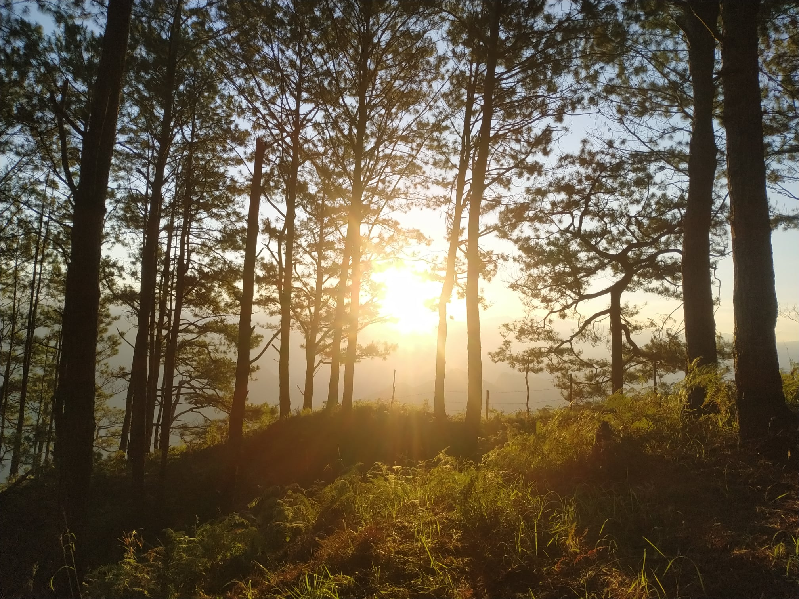

Badol Camping Grounds
Sitio Liteng, Brgy. Sagubo, Kapangan, Benguet — 1,400 MASL
Our Mission
We strive to boost physical and mental wellness through a suite of nature and self-attunement activities in a self-sustained and community-involved environment so that we and the future generations can live the best we can on the best natural environment the only Earth we have has to offer.
Our Vision
We firmly believe that nature and self-attunement is one great avenue that leads to progress of a man's character, community, and environment.
Where We Are
Address
Sitio: Liteng
Barangay: Sagubo
Municipality: Kapangan
Province: Benguet
Campsite Elevation: 1,350–1,400 MASL
Campsite Area: 5,000 sqm (0.5 hectare)
How to Get There
By Vehicle
1.5–2 hour drive from Baguio City to Brgy. Sagubo.
Route: Baguio City → La Trinidad → Gov. Bado Dangwa National Road → Lomon → Sagubo
Jump-off: Kapangan National High School or Sagubo Barangay Hall
By Hiking
6 km mountainous trail from the jump-off point to the campsite.
- Trail 1 — Molintas Trail (Sagubo): Minor hike, Difficulty 2/9. The first 1.5 km can be traversed by 4x4 offroad vehicle.
- Trail 2 — Volkman Trail (Tadayan/Nalseb): Minor hike, Difficulty 3/9.
By Bike
All-the-way route from Baguio to the campsite:
- Baguio to La Trinidad (Benguet Capitol) — 6 km
- La Trinidad to Lomon (Kapangan Municipal Hall) — 27 km
- Lomon to Sagubo (Kapangan NHS) — 8 km
- Sagubo to Campsite — 6 km
Motor bikes are not allowed on the trail to preserve the serenity of the natural environment.

Ready to Escape?
Book your stay at Badol Camping Grounds and let the mountains welcome you home.
Reserve My Spot